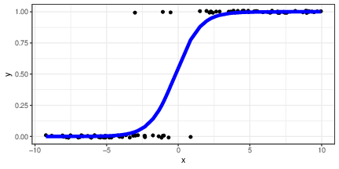
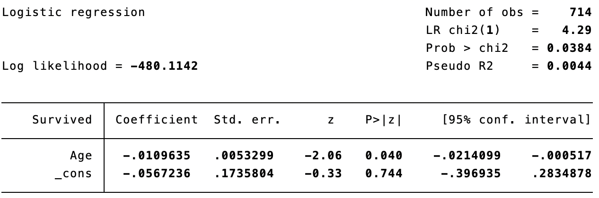

Regression models for counts, dichotomous and ordered data
PSY-8003: Multivariate kvantitative forskningsmetoder
Matthias Mittner
Institute for Psychology
v2022
Today
generalized linear model
logistic regression:
maximum-likelihood estimation
interpretation of coefficients
probabilities
odds and odds-ratios
log-odds
Pseudo-\(R^2\)
model-selection with Likelihood-ratio tests
logistic regression for classification
Poisson regression (count data)
ordinal regression (ordered data)
Generalized linear model
So far we have considered the general linear model (GLM):
\[E[Y|X] = \beta_0 + \beta_1 X_1 + ... + \beta_m X_m\]
assumes that the outcome is normally distributed
assumes that the mean is linearly changing with the predictors
The generalized linear model (GLZM) is an extension:
\[E[Y|X] = g^{-1}(\beta_0 + \beta_1 X_1 + ... + \beta_m X_m)\]
and
\[Y \sim f(\theta)\]
generalizes to non-normal outcomes
allows a non-linear relationship between predictors and outcome
Generalized linear model
Ordinary linear regression is a GLZM:
\[E[Y|X] = g^{-1}(\beta_0 + \beta_1 X_1 + ... + \beta_m X_m)\]
where \(g(x)=x\) (identity function)
Also,
\[Y \sim \text{Normal}(\mu,\sigma)\]
logistic regression, Poisson regression (and friends) and ordinal regression are all GLZMs
Generalized linear model
Logistic regression:
\[E[Y|X] = p_i = \text{logit}^{-1}(\beta_0 + \beta_1 X_1 + ... + \beta_m X_m)\]
\[Y \sim \text{Bernoulli}(p_i)\]
Poisson regression:
\[E[Y|X] = \lambda_i = \text{exp}(\beta_0 + \beta_1 X_1 + ... + \beta_m X_m)\]
\[Y \sim \text{Poisson}(\lambda_i)\]
Ordinal regression (ordered probit):
\[E[Y|X] = \mu_i = \beta_0 + \beta_1 X_1 + ... + \beta_m X_m\]
\[p_{k}=P(Y=k)=\Phi(\tau_k-\mu_i) - \Phi(\tau_{k-1}-\mu_i)\\
Y \sim \text{Multinomial}(p_{k,i})\]
Logistic regression
Dummy-variable as DV
Examples
whether or not someone survived an accident:
0=did not survive
1=survived
whether someone experienced a traumatic event
whether someone won a medal in the Olympics or not
0=no medal
1=won a medal.
Logistic regression
Dichotomous outcome
\[\color{red}{\text{Survived}} = \color{blue}{\beta_0 + \beta_1 X_1 + \beta_2 X_2 + ... + \beta_n X_n} + \epsilon\]
“linear probability modeling”
the has continuous values
the can only be 0 or 1
clear mismatch: the prediction can almost never be correct!
Probability of the outcome
predicting value directly problematic
predicted values almost always “out of scope”
predict the probability of the outcome
but: nonlinear relationship predictor \(\rightarrow\) \(P(Y=1)\)
Estimation of logistic regression models
we don’t know \(P(Y=1)\) for individual datapoints
squared distance from \(P(Y=1)\) cannot be calculated…
Ordinary-least squares cannot be used!
\(R^2\) cannot be calculated!use Maximum-likelihood method instead…
What is a Likelihood?
Likelihood and deviance
The “likelihood”, \(p(x|\theta)\) is the conditional probability that the data \(x\) will be observed given a model structure and a set of parameters \(\theta\) .
usually, the logarithm is used
\[L(\theta)=\log p(x|\theta)\]
and we want to find the “maximum-likelihood” parameters
\[\hat{\theta}=\text{argmax}_{\theta} L(\theta).\]
Statistical software sometimes reports deviances
\[D=-2L(\hat{\theta})\]
(the lower the better)
Likelihood and deviance
In plain english:
likelihood is a goodness-of-fit measure (the higher, the better the fit)deviance is a “deviation from best fit” (error) measure (the lower, the better the fit)deviance is not unlike RSS from before
Likelihood
Likelihood
The “likelihood”, \(p(x|\theta)\) is the conditional probability that the data \(x\) will be observed given a model structure and a set of parameters \(\theta\) .
Likelihood
Likelihood
The “likelihood”, \(p(x|\theta)\) is the conditional probability that the data \(x\) will be observed given a model structure and a set of parameters \(\theta\) .
Likelihood
Examples:
calculating the mean and standard deviation of a sample is a maximum-likelihood estimation (we find \(\hat{\theta}=(\mu,\sigma)\) that are most likely to underly the data)
fitting a linear regression model with OLS is also maximum-likelihood estimation! \(\hat{\theta}=(b_0, b_1)\)
many other models, including logistic regression, are fit using ML estimation
Likelihood in logistic regression
Dichotomous outcome: \(\color{red}{\text{Survived}_i} \sim \text{Binomial}(p_i)\)
\(\color{red}{\text{Survived}_i=1}\) with probability \(p_i\) \(\color{red}{\text{Survived}_i=0}\) with probability \(1-p_i\)
each participant’s probability to survive \(p_i\) is continuous
\[\begin{align*}
p_i&=\text{logit}^{-1}\left( \color{blue}{\beta_0 + \beta_1 X_1 + ... + \beta_k X_k} \right)\\
&=\frac{\exp\left(\color{blue}{\beta_0 + \beta_1 X_1 + ... + \beta_k X_k} \right)}{1+\exp\left(\color{blue}{\beta_0 + \beta_1 X_1 + ... + \beta_k X_k} \right)}
\end{align*}\]
Likelihood sums how often the probability is right
\[\begin{align*}
\text{Likelihood}&=& p&(\color{red}{\text{Survived}_i}|\beta_0,\beta_1,...,\beta_k)\\
&=& &(\color{red}{\text{Survived}_1}\times p_1 + (1-\color{red}{\text{Survived}_1})\times (1-p_1) )\\
& &\times &(\color{red}{\text{Survived}_2}\times p_2 + (1-\color{red}{\text{Survived}_2})\times (1-p_2) )\\
& &\times & ...\\
\end{align*}\]
What are the odds??
Odds: how much more likely is one event relative to another?
Probability: how likely am I to observe a particular event?
What are the odds??
Odds: how much more likely is one event relative to another?
number between 0 and \(\infty\)
Odds \(< 1\) : first event less likely; e.g., Winning lottery ticket 1:1000000
Odds \(=1\) : both events equally likely; e.g., being born female 1:1
Odds \(>1\) : first event more likely; e.g., getting a good stats grade 5:1
Probability: how likely am I to observe a particular event?
number between 0 and 1 (sometimes %)
\(p=0\) : it can never happen\(p=0.5\) : it happens 50% of the time\(p=1\) : it happens always
Odds in logistic regression
Blue event : someone survived, \(\color{blue}{Y=1}\) Orange event : someone died, \(\color{orange}{Y=0}\)
\[\text{Odds} = \frac{P(\color{blue}{Y=1})}{P(\color{orange}{Y=0})}\]
because someone either died or did not: \(P(\color{orange}{Y=0})=1-P(\color{blue}{Y=1})\)
\[\text{Odds} = \frac{P(\color{blue}{Y=1})}{1-P(\color{blue}{Y=1})} = \frac{1-P(\color{orange}{Y=0})}{P(\color{orange}{Y=0})} = \frac{p}{1-p}\]
Log-odds
\(\text{Log-Odds} = \log\left[\frac{P(\color{blue}{Y=1})}{P(\color{orange}{Y=0})}\right] = \log\left(\frac{p}{1-p}\right)\)
Odds are stricly positive, but linear model predicts negative or positive values
by log-transforming the odds, the scope is extended to \([-\infty,+\infty]\)
Logistic regression model

\[\log{\left(\frac{p}{1-p}\right)} = \beta_0 + \beta_1 X_1 + \ldots + \beta_k X_k + \varepsilon\]
the linear model predicts log-odds, not probabilities
these are difficult to interpret
a transformation to the probability scale is necessary for interpretation
Interpretation of Intercept and slope
Intercept:
log-odds scale: intercept with \(y\) -axis as always (i.e., predictors \(=0\) )
probability scale: shifts logistic curve on horizontal axis
Slope:
log-odds scale: constant increase of logodds when adding one unit of \(x\)
probability scale: increase of \(p\) when adding one unit of \(x\) depends on where on the horizontal axis we are
Women and children first!
Example dataset titanic.dta
Deaths in RMS Titanic accident (DV)
were more “women and children” saved?
we model survival probability: \(p=P(\text{Survived}=1)\)
therefore: \(P(\text{Death})=1-p\)
Titanic deaths: predictor age

\[\begin{align*}
\log\left( \frac{p}{1-p}\right) &= \beta_0 + \beta_{1}(\operatorname{Age})\\
\log\left( \frac{p}{1-p}\right) &= \color{blue}{-0.057} \color{red}{- 0.01}(\operatorname{Age})
\end{align*}\]
the log-odds for survival for a newborn passenger (age=0) was
for every year of age, the log-odds for survival drop by
Titanic deaths: predictor age
\[\begin{align*}
\log\left( \frac{p}{1-p}\right) &= \color{blue}{-0.057} \color{red}{- 0.01}(\operatorname{Age})
\end{align*}\]
How likely is an newborn to survive? (\(\text{Age}=0\) )
\[\begin{align*}
\log\left( \frac{p}{1-p}\right) &= \color{blue}{-0.057} \color{red}{- 0.01}\times (0) &=& \color{blue}{-0.057}\\
\frac{p}{1-p} &= \exp{(\color{blue}{-0.057})} &=& 0.94\\
p &= \frac{0.94}{1+0.94} &=& 0.49
\end{align*}\]
for a newborn passenger …
the odds of survival were 0.94, i.e., about 1:1.06
the probability of survival was \(p=0.49\)
Titanic deaths: predictor age
\[\begin{align*}
\log\left( \frac{p}{1-p}\right) &= \color{blue}{-0.057} \color{red}{- 0.01}(\operatorname{Age})
\end{align*}\]
How likely is an older adult to survive? (\(\text{Age}=70\) )
\[\begin{align*}
\log\left( \frac{p}{1-p}\right) &= \color{blue}{-0.057} \color{red}{- 0.01}\times (70) &=& \color{blue}{-0.757}\\
\frac{p}{1-p} &= \exp{(\color{blue}{-0.757})} &=& 0.47\\
p &= \frac{0.47}{1+0.47} &=& 0.32
\end{align*}\]
for a 70-year old passenger …
the odds of survival were 0.47, i.e., about 1:2.1
the probability of survival was \(p=0.32\)
Titanic: Multiple predictors
$$( ) = () (_{})
$$
the log-odds of survival for a newborn, female passenger was
Odds: \(\exp(1.12)\approx 3:1\)
for every year of age, the log-odds for survival drop by
the logodds for males are decreased by
Odds: \(\exp(1.12-2.47)\approx 1:4\)
Titanic: Multiple predictors
$$( ) = () (_{})
$$
Survival of elderly ladies? \[\begin{align*}
\log\left( \frac{p}{1-p}\right) &= \color{blue}{1.12} \color{red}{- 0.01}(70) \color{green}{- 2.47}(0) &=& 0.90\\
\frac{p}{1-p}&=\exp{\left( 0.90 \right)} &=& 2.45\\
p &= \frac{2.45}{1+2.45} &=& 0.71\\
\end{align*}\]
Survival of elderly gentlemen? \[\begin{align*}
\log\left( \frac{p}{1-p}\right) &= \color{blue}{1.12} \color{red}{- 0.01}(70) \color{green}{- 2.47}(1) &=& -1.57\\
\frac{p}{1-p}&=\exp{\left( -1.57 \right)} &=& 0.21\\
p &= \frac{0.21}{1+0.21} &=& 0.17\\
\end{align*}\]
Interactions …
$$( ) = + () ({}) ( {})
$$
the log-odds of survival for an average-aged, female passenger was
Odds: \(\exp(1.18)\approx 3.3:1\)
for every year of age, the log-odds for survival increase by for females
the logodds for average-aged males are decreased by
Odds: \(\exp(1.18-2.55)\approx 1:4\)
the effect of age is decreased by for males and is -0.02
Interactions …
$$( ) = + () ({}) ( {})
$$
Survival of elderly ladies (\(\text{c.Age}=40\) )? \[\begin{align*}
\log\left( \frac{p}{1-p}\right) &= \color{blue}{1.18} + \color{red}{0.02}(40) \color{green}{- 2.55}(0) \color{orange}{- 0.04}(40\times 0) &=& 1.97\\
\frac{p}{1-p}&=\exp{\left( 1.97 \right)} &=& 7.2\\
p &= \frac{7.2}{1+7.2} &=& 0.88\\
\end{align*}\]
Survival of elderly gentlemen (\(\text{c.Age}=40\) )? \[\begin{align*}
\log\left( \frac{p}{1-p}\right) &= \color{blue}{1.18} + \color{red}{0.02}(40) \color{green}{- 2.55}(1) \color{orange}{- 0.04}(40\times 1) &=& -2.22\\
\frac{p}{1-p}&=\exp{\left( -2.22 \right)} &=& 0.11\\
p &= \frac{0.11}{1+0.11} &=& 0.10\\
\end{align*}\]
The curse of non-linearity
\[\begin{align*}
\log\left( \frac{p}{1-p}\right) &= \color{blue}{-0.057} \color{red}{- 0.01}(\operatorname{Age})
\end{align*}\]
the increase with age is linear in log-odds
but not in odds or probabilities !
difference between 10- and 20-year olds or 60- vs. 70-year olds:
\(\Delta\) log-odds:
\((\color{blue}{-0.057} \color{red}{- 0.01}\times 10)-(\color{blue}{-0.057} \color{red}{- 0.01}\times 20)=-0.11\) \((\color{blue}{-0.057} \color{red}{- 0.01}\times 60)-(\color{blue}{-0.057} \color{red}{- 0.01}\times 70)=-0.11\) \(\Delta\) odds:
\(\exp{\left(\color{blue}{-0.057} \color{red}{- 0.01}\times 10\right)}-\exp{\left(\color{blue}{-0.057} \color{red}{- 0.01}\times 20\right)}=-0.088\) \(\exp{\left(\color{blue}{-0.057} \color{red}{- 0.01}\times 60\right)}-\exp{\left(\color{blue}{-0.057} \color{red}{- 0.01}\times 70\right)}=-0.05\) \(\Delta\) \(p\) :
\(\text{logit}^{-1}{\left(\color{blue}{-0.057} \color{red}{- 0.01}\times 10\right)}-\text{logit}^{-1}{\left(\color{blue}{-0.057} \color{red}{- 0.01}\times 20\right)}=-0.027\) \(\text{logit}^{-1}{\left(\color{blue}{-0.057} \color{red}{- 0.01}\times 60\right)}-\text{logit}^{-1}{\left(\color{blue}{-0.057} \color{red}{- 0.01}\times 70\right)}=-0.024\)
The curse of non-linearity
the effect an increase of the predictor has changes!
for small coefficients fluctuating around \(p=0.5\) , the change is almost linear
but for deviations from small or large probabilities, the difference is strong
We cannot easily interpret the raw regression coefficients!
Solution: Use the Odds-ratio (OR)!
instead of interpreting \(\beta\) , interpret \(\exp(\beta)\) !
the effect is independent of the reference level (unlike for probabilities)
the effect is not additive but multiplicative
interpreted as “percentage change in odds per unit increase”
Example: \(\beta_{\text{Age}}=-0.02\) \(\Rightarrow\) \(\exp(\beta_{\text{Age}})=\text{OR}_{\text{Age}}=0.98\)
for every year, we multiply the odds by 0.98 to get the new odds
“the odds are reduced by 2% per year”
for two years: OR\(=0.98\times 0.98=0.98^2=0.96\)
“the odds are reduced by 4% after two years”
for 10 years: OR\(=0.98^{10}=0.82\)
“the odds are reduced by 18% after ten years”
Odds-ratios for regression coefficients
An OR of 1 means that there is no change (i.e., no effect of that variable)
If the OR is 1.24 it means that the odds for Y=1 increase by 24 per cent for each step up on the independent variable
If the OR is 0.83 it means that it decreases by 17 per cent. The stronger the relation the farther the OR will be from 1
Odds-ratios for regression coefficients
Worked example
$$ = ()({})( {})
$$
survival odds for female, middle-aged: \(\color{blue}{3.26}:1\)
in case you are male: \(\color{blue}{3.26}\times \color{green}{0.078} = 0.25\) , \(1:4\) (reduced by 92%)
if you are female, with each year your odds increase by 1.98%
e.g., if you are middle-aged and female, another year yields \(\color{blue}{3.26}\times \color{red}{1.0198}=3.32:1\)
if you are male, the increase with every year is reduced by 4.1%
i.e., if you are male, the change in odds for every year is \(\color{red}{1.0198}\times \color{orange}{0.96}=0.98\) (odds are reduced by 2% per year)
Model selection
Which model is best?
Model 1: Survived Age
\[\begin{align*}
\log\left( \frac{p}{1-p}\right) &= \color{blue}{-0.057} \color{red}{- 0.01}(\operatorname{Age})
\end{align*}\]
Model 2: Survived Age male
$$( ) = () (_{})
$$
Model 3: Survived cAge##male
$$( ) = + () ({}) ( {})
$$
Model selection
Which model is best?
Model 3
predictors
AgeSexAge\(\times\) Sex
Model selection
Look at the likelihood…
Model 1: log-Lik=\(-480.1142\) (df=2)
Model 2: log-Lik=\(-374.9785\) (df=3)
Model 3: log-Lik=\(-370.2017\) (df=4)
Model 3 has the highest likelihood… (but it also has more parameters!)
Comparing Likelihoods across models
assume two types of model, here:
a single normal distribution (blue) \(\rightarrow\) parameters \(\mu,\sigma\)
mixture of two normal distributions (red) \(\rightarrow\) parameters \(\mu_1,\sigma_1,\mu_2,\sigma_2\)
get ML estimate for each of the two model-types, \(\text{LL}_1, \text{LL}_2\)
we can compare the likelihoods of those fits
likelihood-ratio: \(\frac{\text{Lik}_2}{\text{Lik}_1}\) quantifies difference (corresponds to \(\text{LL}_2-\text{LL}_1\) )
Likelihood-ratio test
Problem:
if fit with ML, a model with more parameters is guaranteed to have higher LL (similar as for the RSS case)
choosing always the model with higher LL \(\rightarrow\) always choose more complicated model
results in always choosing a “saturated model”
Likelihood-ratio test
model that predicts each point perfectly always has highest LL
however, this model needs \(N\) parameters (one for each datapoint)
maybe we want something simpler?
Likelihood-ratio test
Logic:
adding more parameters always results in higher LL
so \(\frac{\text{Lik}_2}{\text{Lik}_1}>1\) when model 2 has more parameters than model 1
How much increase in LL would be expected given that the real model is the simpler model (\(H_0\) )?
\(\chi^2 = - 2(\text{LL}_1 - \text{LL}_2)\) follows \(\chi^2\) with (df\(_2\) -df\(_1\) ) degrees of freedom
the likelihood-ratio test, tests whether the increase in LL is significantly stronger than that
Likelihood ratio test…
Run a sequence of (pairwise) tests
LR-test Model 1 vs. Model 2
log-Lik\(_1\) =\(-480.1142\) vs. log-Lik\(_2\) =\(-374.9785\)
LR-test Model 2 vs. Model 3
log-Lik\(_2\) =\(-374.9785\) vs. log-Lik\(_3\) =\(-370.2017\)
Model selection
Model 1 vs. Model 2
Likelihood-ratio test
Model 1 (Age only) vs. Model 2 (Age and Sex)
Model 1 is better than nothing
\(\chi^2(1)=4.29, p=0.038\)
Model 2 is better than nothing
\(\chi^2(2)=214.56, p<0.001\)
Model 2 is better than model 1
\(\chi^2(1)=210.27, p<0.001\)
Model selection
Model 2 vs. Model 3
Likelihood-ratio test
Model 2 (no interaction) vs. Model 3 (include Age \(\times\) Sex)
Model 2 is better than nothing
\(\chi^2(2)=214.56, p<0.001\)
Model 3 is better than nothing
\(\chi^2(3)=224.11, p<0.001\)
Model 3 is better than model 2
\(\chi^2(1)=9.55, p=0.002\)
Model selection
But what about the goodness-of-fit?
in OLS, we have \(R^2=1-\frac{\text{RSS}}{\text{TSS}}\) (proportion explained variance)
not possible for maximum-likelihood based models
define “Pseudo”-\(R^2\) that have similar behaviour:
\(R^2_{\text{pseudo}} \in [0,1]\) \(R^2_{\text{pseudo}}\) close to zero: bad fit\(R^2_{\text{pseudo}}\) close to one: excellent fit (perhaps overfit)
many different versions of \(R^2_{\text{pseudo}}\) but often McFadden (1977) is used:
$$R^2_{}=1-
$$
Logit or Probit regression?
“probit-regression”: using the cumulative density of a normal distribution for transforming probabilities
highly similar results in most cases
advantages logit: interpretation as odds and log-odds (not possible for probit!)
advantages probit: can be theoretically motivated sometimes
if assumption holds that binary \(Y\) is the result of “splitting” a normally-distributed variable, probit is theoretically more appropriate
possible to use Likelihood to determine which one is better-fitting
Logistic regression as a classification problem
“machine-learning” approach
logistic regression often used as a “baseline” to compare to
“supervised” learning: learning from a “teacher”
Main goal : optimize predictive accuracy for future data
Logistic regression as a classification problem
given a training set \((x_i,y_i)\) , try to create a decision rule \(f\) so that \(f(x_i)\approx y_i\)
logistic regression: if predicted \(P(Y=1)>0.5\) , classify as \(1\) , else \(0\)
Generalizability to a “test” set that has not been used for fitting?
Decision boundary for Titanic dataset
black line=“decision boundary”
above black line: model classified as “Survived”
below black line: model classified as “Dead”
the model is frequently wrong (it is very simple)!
The model can be wrong
The confusion matrix
maximize TN and TP
minimize FN and FP
Cross-validation
fit logistic regression to “training set” and set aside a “hold-out” (“test”) set
how well can we predict the \(Y\) -values in the test-set?
repeat leaving out different parts of the data
average performance across all the datasets
Cross-validation
protects against overfitting!
allows to evaluate how well the model can predict out of sample
Poisson regression
Useful model for count data
Examples
Are the number of motorcycle deaths in a given year related to a state’s helmet laws?
Does the number of employers conducting on-campus interviews during a year differ for public and private colleges?
Does the daily number of asthma-related visits to an Emergency Room differ depending on air pollution indices?
Has the number of deformed fish in randomly selected Minnesota lakes been affected by changes in trace minerals in the water over the last decade?
Poisson regression as GLZM
Poisson regression is a generalized linear model :
\[E[Y|X] = \exp(\beta_0 + \beta_1 X_1 + ... + \beta_m X_m)\]
\[\log(E[Y|X]) = \beta_0 + \beta_1 X_1 + ... + \beta_m X_m\]
and
\[Y \sim \text{Poisson}(\lambda)\]
Poisson distribution
The Poisson distribution has a single parameter \(\lambda\) .
Property: The variance of the distribution is equal to its mean, \(\lambda\) !
That means, the higher the mean, the higher the variance!
Poisson vs. ordinary linear regression
What’s wrong with using ordinary linear regression for count data?
count-data are bounded below by zero
count-data are discrete
count-data often have a “long tail” (a few very high counts)
Poisson vs. ordinary linear regression
predicted values are discrete (counts)
variance of predicted values increases with the predictor variable
fit is done by maximum likelihood
How many publications did you publish during your PhD?
Poisson regression
\[\log(E[Y|X]) = \beta_0 + \beta_1 X_1 + ... + \beta_m X_m\]
<- glm (articles ~ kids + prestige, data= phdpubs, family = poisson)summary (mod)
Call:
glm(formula = articles ~ kids + prestige, family = poisson, data = phdpubs)
Deviance Residuals:
Min 1Q Median 3Q Max
-1.9887 -1.7387 -0.4826 0.4244 7.7400
Coefficients:
Estimate Std. Error z value Pr(>|z|)
(Intercept) 0.29460 0.08846 3.330 0.000868 ***
kids -0.06668 0.03449 -1.933 0.053227 .
prestige 0.08381 0.02600 3.224 0.001265 **
---
Signif. codes: 0 '***' 0.001 '**' 0.01 '*' 0.05 '.' 0.1 ' ' 1
(Dispersion parameter for poisson family taken to be 1)
Null deviance: 1817.4 on 914 degrees of freedom
Residual deviance: 1802.8 on 912 degrees of freedom
AIC: 3476.5
Number of Fisher Scoring iterations: 5
the coefficients describe changes in log-units!
same trick as in logistic regression: exponentiation
Poisson regression
$$
({ }) = 0.29 - 0.07() + 0.08()
$$
(Intercept) kids prestige
1.3425838 0.9354992 1.0874270
the exponentiated coefficients are called incident rate ratios
they describe the percentage change of the outcome variable with a unit change in the predictor
kids: for every kid a PhD student has, they have a 6.5% in number of articles publishedprestige: for every prestige-point of their lab, a PhD student published 8.7% more papers
Model comparison
library (lmtest)<- glm (articles ~ kids + prestige, data= phdpubs, family = poisson)<- glm (articles ~ kids + prestige + gender, data= phdpubs, family = poisson)<- glm (articles ~ kids + prestige + gender + married, data= phdpubs, family = poisson)lrtest (mod1,mod2, mod3)
Likelihood ratio test
Model 1: articles ~ kids + prestige
Model 2: articles ~ kids + prestige + gender
Model 3: articles ~ kids + prestige + gender + married
#Df LogLik Df Chisq Pr(>Chisq)
1 3 -1735.2
2 4 -1720.1 1 30.2931 3.714e-08 ***
3 5 -1717.0 1 6.2286 0.01257 *
---
Signif. codes: 0 '***' 0.001 '**' 0.01 '*' 0.05 '.' 0.1 ' ' 1
use likelihood-ratio test to compare models
Model comparison
We can also compare the Poisson model to a standard OLS regression model:
Likelihood ratio test
Model 1: articles ~ kids + prestige + gender + married
Model 2: articles ~ kids + prestige + gender + married
#Df LogLik Df Chisq Pr(>Chisq)
1 6 -1885.8
2 5 -1717.0 -1 337.54 < 2.2e-16 ***
---
Signif. codes: 0 '***' 0.001 '**' 0.01 '*' 0.05 '.' 0.1 ' ' 1
the Poisson model fits significantly better than the OLS model
Poisson model for rates
$$
\[\begin{aligned}
\log \left(\frac{ E( \operatorname{incidents} ) }{\text{time at sea}}\right) &= \alpha + \beta_{1}(\operatorname{type}) + \beta_{2}(\operatorname{construction})\ \\
&\quad +\beta_{3}(\operatorname{operation}) \\
\log ({ E( \operatorname{incidents} ) }) &= \alpha + \beta_{1}(\operatorname{type}) + \beta_{2}(\operatorname{construction})\ \\
&\quad +\beta_{3}(\operatorname{operation}) + \log\text{(time at sea)}
\end{aligned}\]
$$
sometimes, we wish to model rates instead of counts
for example, if count the number of accidents a ship has encountered, it is important to consider how long it has been on the sea
Poisson model for rates
$$
\[\begin{aligned}
\log \left(\frac{ E( \operatorname{incidents} ) }{\text{time at sea}}\right) &= \alpha + \beta_{1}(\operatorname{type}) + \beta_{2}(\operatorname{construction})\ \\
&\quad +\beta_{3}(\operatorname{operation})\\
\end{aligned}\]
$$
<- haven:: read_dta ("data/shipaccidents.dta" )<- glm (incidents ~ type + construction + operation, family = poisson, data = ships, offset = log (service))summary (mod)
Call:
glm(formula = incidents ~ type + construction + operation, family = poisson,
data = ships, offset = log(service))
Deviance Residuals:
Min 1Q Median 3Q Max
-2.609 -0.970 -0.346 0.990 3.086
Coefficients:
Estimate Std. Error z value Pr(>|z|)
(Intercept) -7.60928 0.21785 -34.930 < 2e-16 ***
type 0.15135 0.05968 2.536 0.01121 *
construction 0.28142 0.05912 4.760 1.93e-06 ***
operation 0.35565 0.12150 2.927 0.00342 **
---
Signif. codes: 0 '***' 0.001 '**' 0.01 '*' 0.05 '.' 0.1 ' ' 1
(Dispersion parameter for poisson family taken to be 1)
Null deviance: 146.328 on 33 degrees of freedom
Residual deviance: 78.998 on 30 degrees of freedom
AIC: 184.86
Number of Fisher Scoring iterations: 5
Overdisperson
in some cases, the simple Poisson model is not sufficiently flexible (only one parameter)
Overdispersion: the variance is larger than accounted for by the Poisson modelintroduce a dispersion parameter, or use a more flexible model (e.g., negative binomial model)
Overdispersion
<- glm (articles ~ kids + prestige, data= phdpubs, family = poisson)<- glm.nb (articles ~ kids + prestige, data= phdpubs)lrtest (mod.pois, mod.nb)
Likelihood ratio test
Model 1: articles ~ kids + prestige
Model 2: articles ~ kids + prestige
#Df LogLik Df Chisq Pr(>Chisq)
1 3 -1735.2
2 4 -1606.3 1 257.93 < 2.2e-16 ***
---
Signif. codes: 0 '***' 0.001 '**' 0.01 '*' 0.05 '.' 0.1 ' ' 1
Overdispersion test
data: mod.pois
z = 4.3713, p-value = 6.176e-06
alternative hypothesis: true dispersion is greater than 1
sample estimates:
dispersion
2.21015
since the negative binomial model fits better, there is overdispersion present
an overdispersion test confirms that
Overdispersion
Comparing Poisson and negative-binomial models
Zero-inflation
How often did you engage in extramarital sexual intercourse during the past year? ::: {.cell} ::: {.cell-output-display}
in some count-datasets, there is an overrepresentation of zeros (“zero-inflation”)
in excessive cases, these cannot be accounted for even by negative binomial models
Zero-inflated models
extend the model with a part that explicitly models the zeros (as a logistic regression)
model the remaining distribution as Possion or NegBin
“two-part” model and we can add predictors to both parts!
Zero-inflation
How often did you engage in extramarital sexual intercourse during the past year? ::: {.cell} ::: {.cell-output-display} ::: :::
$$
= 0 + {1}()\
$$
$$
({ {E( )} }) = _0 + _1()
$$
Zero-inflation
How often did you engage in extramarital sexual intercourse during the past year?
$$
= 0 + {1}()\
$$
$$
({ {E( )} }) = _0 + _1()
$$
<- zeroinfl (affairs ~ yearsmarried, data= affairs, dist= "poisson" )summary (mod.zip)
Call:
zeroinfl(formula = affairs ~ yearsmarried, data = affairs, dist = "poisson")
Pearson residuals:
Min 1Q Median 3Q Max
-0.6323 -0.5420 -0.4489 -0.3965 6.4827
Count model coefficients (poisson with log link):
Estimate Std. Error z value Pr(>|z|)
(Intercept) 1.359275 0.081372 16.705 < 2e-16 ***
yearsmarried 0.039757 0.006935 5.733 9.88e-09 ***
Zero-inflation model coefficients (binomial with logit link):
Estimate Std. Error z value Pr(>|z|)
(Intercept) 1.58854 0.18401 8.633 < 2e-16 ***
yearsmarried -0.05749 0.01729 -3.325 0.000885 ***
---
Signif. codes: 0 '***' 0.001 '**' 0.01 '*' 0.05 '.' 0.1 ' ' 1
Number of iterations in BFGS optimization: 7
Log-likelihood: -809.4 on 4 Df
count_(Intercept) count_yearsmarried zero_(Intercept) zero_yearsmarried
3.8933680 1.0405575 4.8965742 0.9441319
Pretend ordinal data is continuous?
Usually serious misfit
Can produce false alarms (Type I)
Can produce misses (Type II)
Can produce inversions (real effect opposite)
Has lower power
Ordinal regression
Assume an underlying continous “latent” variable
Postulate ”thresholds”
Probability of each outcome = area between thresholds
Additional parameters: thresholds
Regression is conducted on latent variable!
“Latent” variable
Ordinal regression example
$$
\[\begin{aligned}
P( \operatorname{best} \geq \operatorname{mediocre} ) &= \Phi[\alpha_{1} + \beta_{1}(\operatorname{zflat\_price}) + \beta_{2}(\operatorname{zyear\_built}) + \beta_{3}(\operatorname{zfloor\_size})] \\
P( \operatorname{mediocre} \geq \operatorname{poor} ) &= \Phi[\alpha_{2} + \beta_{1}(\operatorname{zflat\_price}) + \beta_{2}(\operatorname{zyear\_built}) + \beta_{3}(\operatorname{zfloor\_size})]
\end{aligned}\]
$$
<- clm (energy_efficiency ~ zflat_price+ zyear_built+ zfloor_size, data= flats, link = "probit" )summary (mod)
formula: energy_efficiency ~ zflat_price + zyear_built + zfloor_size
data: flats
link threshold nobs logLik AIC niter max.grad cond.H
probit flexible 67 -50.62 111.23 5(0) 3.68e-13 8.8e+00
Coefficients:
Estimate Std. Error z value Pr(>|z|)
zflat_price -0.4693 0.2153 -2.180 0.0292 *
zyear_built -0.5121 0.2754 -1.860 0.0629 .
zfloor_size 0.4909 0.2478 1.981 0.0476 *
---
Signif. codes: 0 '***' 0.001 '**' 0.01 '*' 0.05 '.' 0.1 ' ' 1
Threshold coefficients:
Estimate Std. Error z value
best|mediocre -1.2133 0.2115 -5.736
mediocre|poor 1.0359 0.1951 5.310


 ::: :::
::: :::